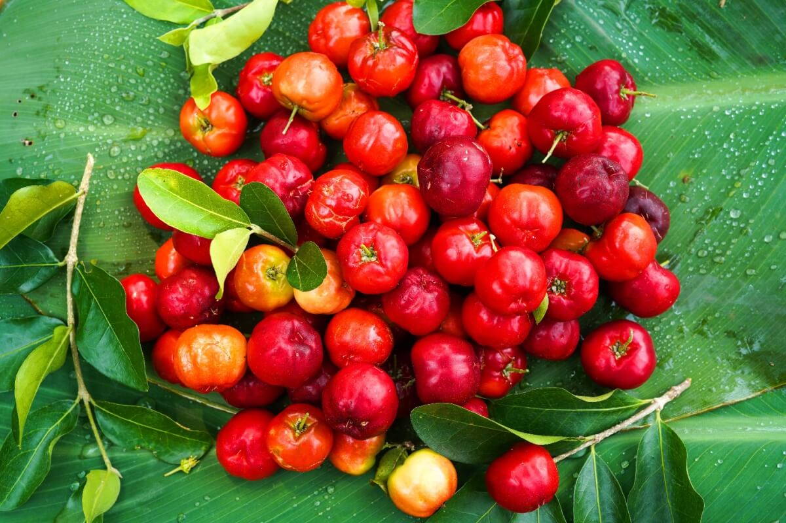
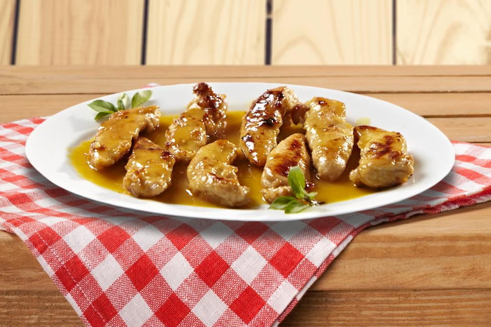
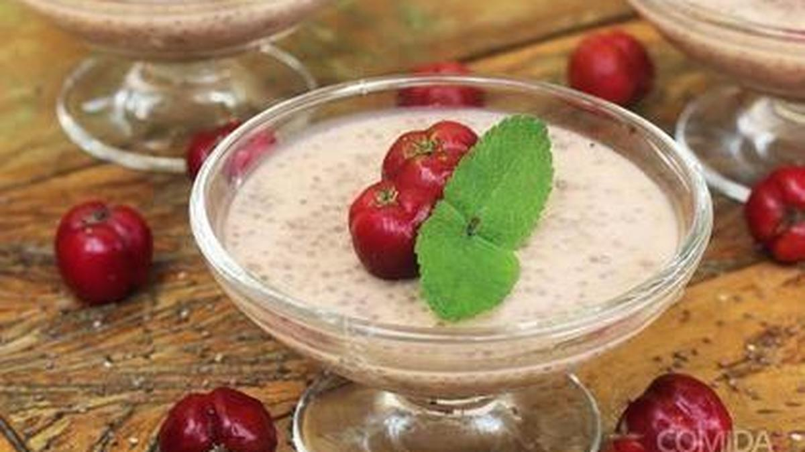
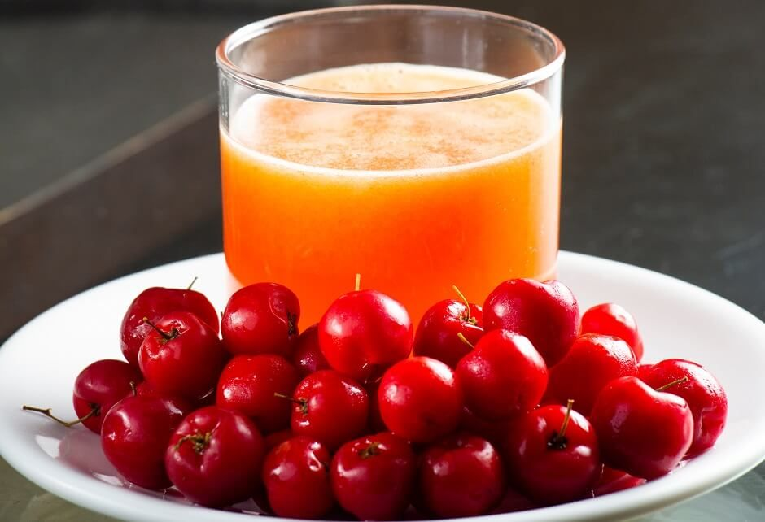
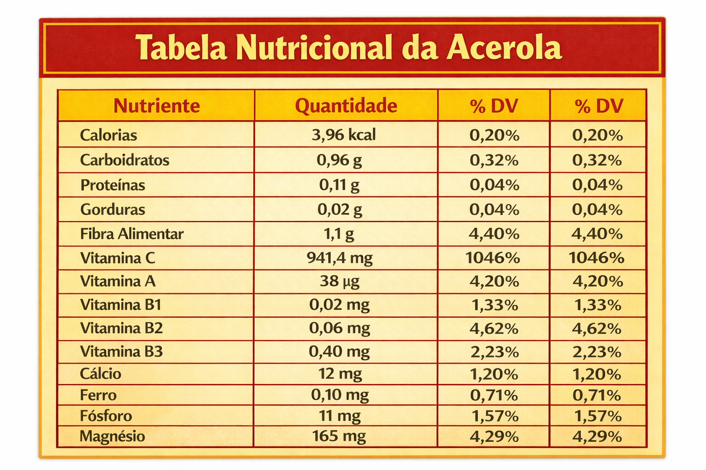

ACEROLA
a acerola (Crataegus azarolus) oferece múltiplas variedades diferenciadas pela cor e origem.
A fruta possui excelentes qualidades nutricionais e propriedades antioxidantes.
Ela pode ser cultivada em diversos climas e é adequada para jardins domésticos.
Há confusão frequente entre a acerola europeia e a acerola americana, por isso é essencial entender suas diferenças botânicas e usos.




